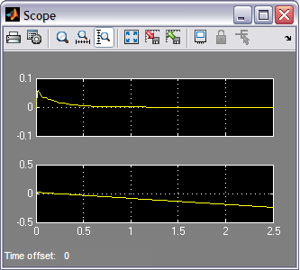

Inverted Pendulum: Simulink Controller Design
From the Inverted Pendulum: Simulink Modeling page we generated two different simulation models. We will now employ these models within Simulink to design different approaches to control and simulate the resulting closed-loop behavior.
Contents
Problem setup and design requirements
In this problem, the cart with an inverted pendulum, shown below, is "bumped" with an impulse force, .

For this example, let's assume that
(M) mass of the cart 0.5 kg
(m) mass of the pendulum 0.2 kg
(b) friction of the cart 0.1 N/m/sec
(l) length to pendulum center of mass 0.3 m
(I) inertia of the pendulum 0.006 kg*m^2
(F) force applied to the cart N
(x) cart position coordinate m
(theta) pendulum angle from vertical radians
In the design process we will develop a PID controller and apply it to a single-input, single-output plant. More specifically, the controller will attempt to maintain the pendulum vertically upward when the cart is subjected to a 1-Nsec impulse. The cart's position will be ignored. Under these conditions, the design criteria are:
- Settling time of less than 5 seconds
- Pendulum should not move more than 0.05 radians away from the vertical
Implementing PID control for the nonlinear model
In the Inverted Pendulum: PID Controller Design page a PID controller was designed with proportional, integral, and derivative gains equal to 100, 1, and 20, respectively. To implement this closed-loop system, we will start with one of our plant models from the Inverted Pendulum: Simulink Modeling page. Following the steps below, we will build a closed-loop model with reference input of pendulum position and a disturbance force applied to the cart.
- To begin, open either of the Simulink models generated previously, Pend_Model.mdl or Pend_Model_Simscape.mdl. We will use the Simscape model to leverage the animation capabilities it offers.
- Insert two Add blocks from Simulink/Math Operations library.
- Change the List of signs: of one of the Add blocks to "+-".
- Insert a Constant block from Simulink/Sources library. Change its value to 0. This is the reference input that corresponds to the pendulum vertically upward. Note, the non-Simscape model (and the rest of the pages in this example) define the pendulum angle to equal pi when pointing straight up.
- Insert a PID Controller block from the Simulink/Continuous library.
- Edit the PID block by doubleclicking on it. Change the Proportional (P): gain to "100", leave the Integral (I): gain as "1", and change the Derivative (D): gain to "20".
- Now connect the blocks as they appear in the following figure:

You can download our version here.
Nonlinear closed-loop response
We can now simulate the closed-loop system. Be sure that the physical parameters are set as follows.
M = 0.5; m = 0.2; b = 0.1; I = 0.006; g = 9.8; l = 0.3;
Now, start the simulation (select Start from the Simulation menu or enter Ctrl-T). As the simulation runs, an animation of the inverted pendulum will visualize the system's resulting motion. Recall that the Show animation during simulation option must be checked under the Simulation > Configuration Parameters menu. After the simulation has run, double-click on the scope and hit the Autoscale button. You should see the following response.

This response is almost identical to the closed-loop response obtained in the MATLAB tutorials (for example, in the Inverted Pendulum: PID Controller Design page). Note that the PID controller handles the nonlinear system very well because the deviation of the angle from the operating point is very small (approximately .05 radians).